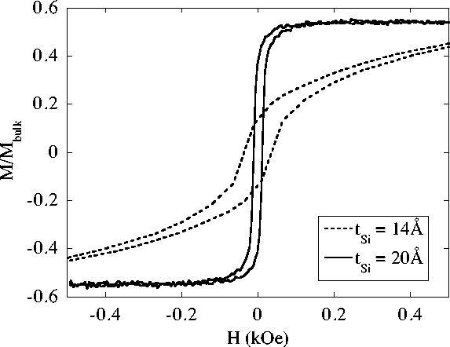

Magnetization curves for (Fe30Å/Si20Å)x50 and
(Fe30Å/Si14Å)x50 multilayers grown on glass
substrates at nominal RT during the same deposition run.
Plotted on the y-axis is the observed magnetization of the
films divided through by the calculated magnetization of an
equivalent thickness of bulk Fe. The
(Fe30Å/Si20Å)x50 multilayer has soft magnetic
properties much like bulk Fe, while the
(Fe30Å/Si14Å)x50 multilayer exhibits AF
interlayer coupling.